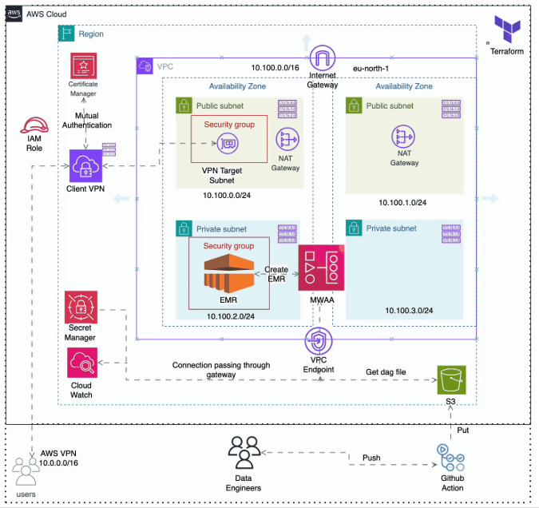
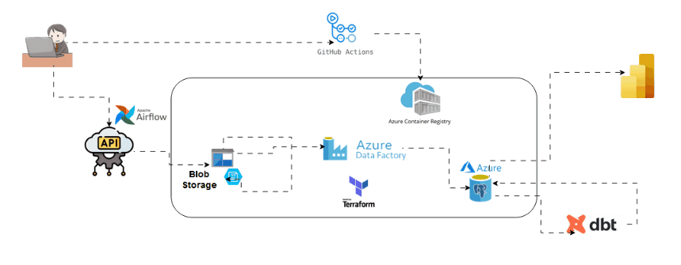

Experienced in the use of analytics and big data technologies. Understands programming, orchestration,
ETL/ELT concepts, cloud computing ...
Analytics tools : Python, Microsoft Excel, Microsoft PowerBI, SQL ...
Also makes use of cloud technologies, Microsoft Azure || Google cloud.
Open to learning as per work demands.
I prioritize team work and come with lots
of humour and positive energy.
Writes and speaks about data(Analytics, Engineering, DevOps)

BuildItAll, a European consulting firm specializing in
scalable data platform solutions for small-sized companies,
has recently secured €20M in Series A funding.
The goal of BuildItAll data team is to create a production-ready
big data processing platform using Apache Spark,
with a focus on cost optimization while maintaining enterprise-grade capabilities
Tools Used: AWS, Python, PySpark,
Apache Airflow, Github Actions, Terraform

A travel Agency whose business model involves recommending
the best tourist locations to their customers based on different
data points.
They want one of the Core Data Engineers graduates to
build a data platform that will process the data from the
country rest API into their (travel agency) cloud-based database/data
warehouse for predictive analytics, which their Data Science team
will use
Tools Used: Azure, Github Actions,
Terraform, dbt, Apache Airflow, Power BI